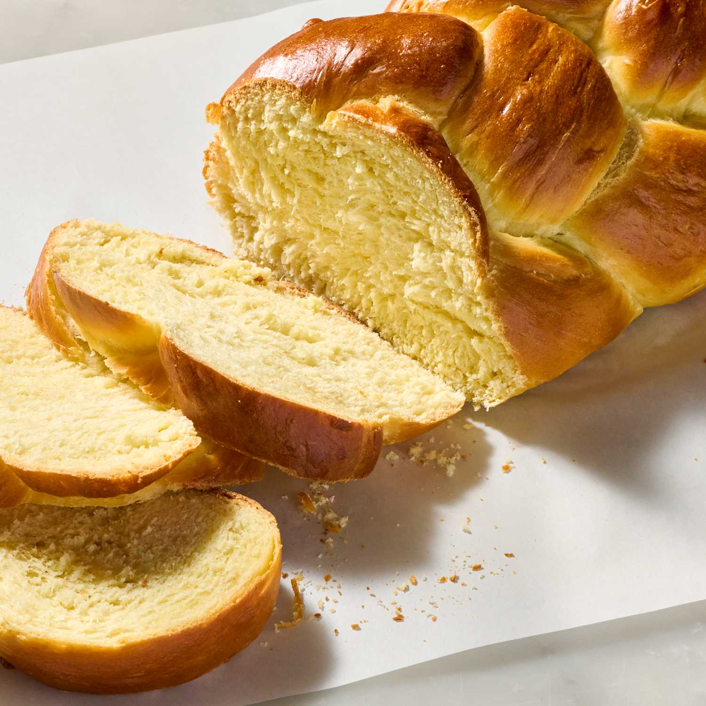

Challah or hallah, also known as berches in Central Europe, is a special bread in Jewish cuisine, usually braided and typically eaten on ceremonial occasions such as Shabbat and major Jewish holidays (other than Passover). It shares many similarities with brioche bread, especially ingredient wise. It does not, however, contain any dairy, like brioche often does. This is in order for the bread to stay pareve, or having no meat or dairy.